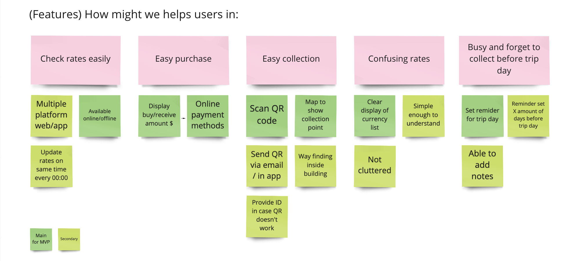
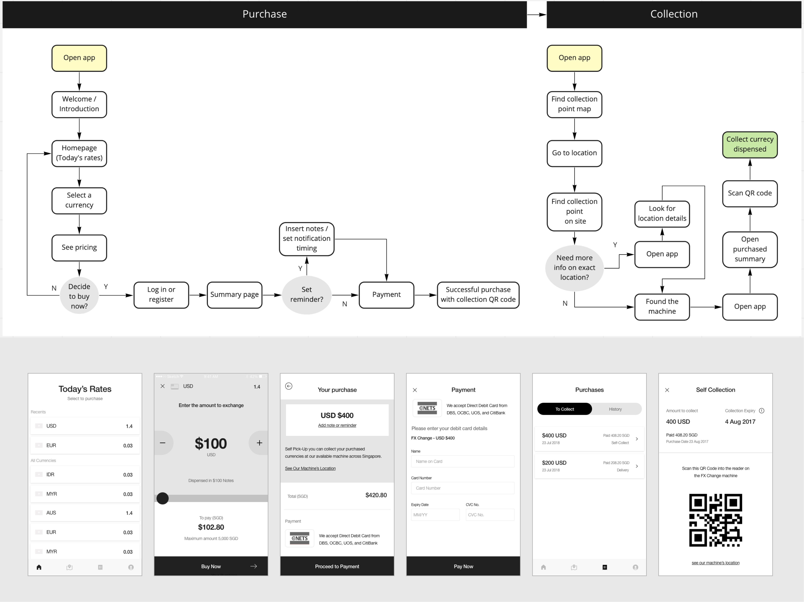

Mobile application to enhance customer's experience in buying & collecting currencies
Duration: 2017-2018 (3-4 months)
Background
FX Change is a start-up that running a currency withdrawal machine service. As a new product in the market, they are planning to launch mobile application to enhance their customer's experience in buying currencies especially for the local who are planning to travel. Worked directly with stakeholders, the team consisted of myself, lead designer, a project manager, and developers.
My role
User Research, Flow, Wireframe, UI Design, Motion Design.
Goal Overview
Target Audience
Locals age 22 to 36 years old
Business Goal
Adopt users and increase transactions from the mobile app
Approach
Stakeholder Interview
Understanding business goals from the stakeholders and user needs assumptions
Validate our assumptions: Potential User Interview
The participants are 5 locals who live in Singapore, working adults and university students, 22-36 years old, travel at least 3 times a year.
What we wish to uncover
- Overall behaviour or thoughts in money exchange transaction
- Opinion about the app concept, liking, and concerns
Findings
How:
- Participants chose to exchange at their 'usual' money changer or the nearest.
- Participants exchange money at least few days before the trip date to be safe.
- 3 out of 5 participants always check online rates and compare.
Thoughts:
- Most participants find the currency exchange rates are hard to understand.
- Most participants would like to avoid exchanging at airport counter, unsatisfying rates.
- 100% participants like the idea of locking down currency rates anywhere, anytime.
- Participants will likely to keep track of the currency rates if it's convinient for them.
Persona

Insights
Deciding factors
- Great rates
- Straight forward payment
- Easy collection
Pain point
- Busy and forget to
collect before trip day
- Confusing rates display
Good to have
- Able to compare rates from other provider
Ideate
Main features
Site map
Main User flow
Prototype & validate
We quicky prototype a wireframe and validate our idea for the main functions. And gather feedbacks from usabality testing to iterate.
Wireframe
Validation: Some points gathered from usability testing

Iterate & build
From the feedbacks and data collected. We iterate the wireframe and come up with final design.
1. Currency Selection
To solve the confusion of reading rate, an indication of base currencies in SGD is added.
Visual aid in form of country flag to add into clarity.
We allow user to select and display only the currency they need.
2. Machine can only dispense specific denominal notes
Show user starting from lowest denominal that can be bought
3. Finding collection point
To better locate the location of the machine, we provide the picture of it's surrounding area
Final Design
For art direction, we have to explore on how they want to position themselves as there's no branding except for the logo. We proposed for a trust and frugal tone of voice, which made use of their dark blue and gold color to show the essence of our product. Passed assets and flow to developers and we went live.